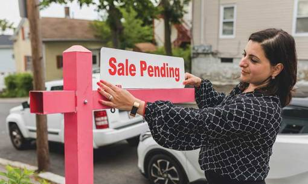

- Главная /
- Недвижимость /
- Риелтор по-американски. Как стать лицензированным маклером жилья в США?
Риелтор по-американски. Как стать лицензированным маклером жилья в США?
Одни иммигранты переезжают в США с четким планом на ближайшее время, другие – еще в поисках
себя. Cферой деятельности, где иммигранту не нужно специального образования и есть
возможность хорошо зарабатывать, является работа с недвижимостью. Это статья о том, кто
такие американские риелторы, какое образование нужно, как стать агентом по продаже
недвижимости и сколько можно заработать.

Кто такие риелторы и зачем они нужны в Америке?
Во-первых. Американский рынок недвижимости устроен так, что купить или арендовать жилье
самому – сложно. Все в Америке ценят свое время, и поэтому, когда наступает пора продать дом
или сдать квартиру, предпочитают обращаются к профессиональным риелторам. И это во многом
правильно!
Во-вторых. Несмотря на то, что в США широко распространены Интернет-сайты и приложения, помогающие покупателям, продавцам, арендодателям и арендаторам, девелоперам и инвесторам, информация на этих ресурсах далека от реальности. По сути, их назначение – реклама, благодаря которой люди, так или иначе, обращаются к риелторам, поскольку только у них есть доступ к профессиональным платформам (MLS - Multi Listing Services).
Во-вторых. Несмотря на то, что в США широко распространены Интернет-сайты и приложения, помогающие покупателям, продавцам, арендодателям и арендаторам, девелоперам и инвесторам, информация на этих ресурсах далека от реальности. По сути, их назначение – реклама, благодаря которой люди, так или иначе, обращаются к риелторам, поскольку только у них есть доступ к профессиональным платформам (MLS - Multi Listing Services).
Как стать риелтором в США?
Как и многие другие профессии, деятельность риелтора лицензирована. Представьте, если
человек, не имеющий лицензии salesperson (риелтор – это торговый знак, официальное название
«salesperson» или «broker») показывает вам квартиру или дом от имени продавца, его могут не
только оштрафовать, но и заключить под стражу. С этим здесь – все серьезно.
Чтобы получить лицензию salesperson нужно быть старше 18 лет. Также необходимо иметь гражданство США или вид на жительство, а еще владеть английским языком. Также потребуется пройти 75 часов специальных курсов и сдать экзамен в Department of State.
После того, как экзамен сдан, новоиспеченный агент должен найти работодателя – брокера в real estate agency. Этот брокер подает специальную заявку в Department of State, что готов работать именно с этим агентом и только после этого риелтор в США получает свою лицензию по почте.
Чтобы получить лицензию salesperson нужно быть старше 18 лет. Также необходимо иметь гражданство США или вид на жительство, а еще владеть английским языком. Также потребуется пройти 75 часов специальных курсов и сдать экзамен в Department of State.
После того, как экзамен сдан, новоиспеченный агент должен найти работодателя – брокера в real estate agency. Этот брокер подает специальную заявку в Department of State, что готов работать именно с этим агентом и только после этого риелтор в США получает свою лицензию по почте.
Чему учат будущих маклеров жилья?
- Правовые вопросы: земельное право, виды собственности, наследство, ведение документации
- Этические вопросы: формы дискриминации, что можно говорить клиентам, а какие слова и фразы лучше избегать
- Строительство: структура домов, материалы, эксплуатация, ремонт
- Ипотека: виды займов, процедура получения ипотеки, требования к соискателям, правила расчета платежей
- Аренда недвижимости: понятие аренды и субаренды, заключение и расторжение договоров, правила показа квартир и домов
- Налоги на недвижимость: как рассчитывать, как платить, как экономить
- Коммерческая недвижимость, управление многоквартирными домами, инвестирование и др.
Сколько стоит получить лицензию риелтора?
Курсов по подготовке риелторов в США очень много. Стартовая стоимость $99. Это минимальный
пакет, который включает в себя прослушивание 75-часового курса и сдачу «школьного» экзамена.
Дополнительно $50-60 стоит учебник. Обычно провайдеры подобных курсов предлагают несколько
«пакетов» на выбор: базовый (даже без учебника), средний (с учебником и дополнительными
материалами) и усиленный (с материалами, «натаскивающими» к экзамену. Как показывает
практика, базового пакета более, чем достаточно.
$15 стоит экзамен в Department of State. Все строго. Раздают специальные формы (как на ЕГЭ) и карандаши (ручки использовать нельзя). В ходе экзамена строгий контроль – никакого списывания и подсказок. Попыток может быть ровно столько, сколько нужно для успешной сдачи экзамена, а именно 75% правильных ответов. $55 fee (пошлина) за выпуск лицензии и непосредственно карточки, которую нужно иметь при себе.
Но это не все. Для того, чтобы начать работать риелтором, нужно вступить в ассоциацию риелторов. Для этого агенты оплачивают ежегодный взнос в местный board (представительство ассоциации) от $300 до $700 в зависимости от конкретного board, а также необходимо пройти еще один 3-часовой курс по этике и сдать экзамен.
И последний штрих перед тем, как начать зарабатывать большие деньги, оформление членства в MLS, том самом, о котором говорилось выше. MLS в отличие от сайтов с недвижимостью дает возможность изучить полную картину того или иного объекта: не только фото, но и историю этой недвижимости, состояние дома, размеры, особенности коммуникаций, размер коммунальных услуг и пр. Обычный клиент не сможет найти подобную информацию. Именно поэтому и нужны риелторы. MLS тоже платный. Ежегодный взнос начинается от $1000 и выше
$15 стоит экзамен в Department of State. Все строго. Раздают специальные формы (как на ЕГЭ) и карандаши (ручки использовать нельзя). В ходе экзамена строгий контроль – никакого списывания и подсказок. Попыток может быть ровно столько, сколько нужно для успешной сдачи экзамена, а именно 75% правильных ответов. $55 fee (пошлина) за выпуск лицензии и непосредственно карточки, которую нужно иметь при себе.
Но это не все. Для того, чтобы начать работать риелтором, нужно вступить в ассоциацию риелторов. Для этого агенты оплачивают ежегодный взнос в местный board (представительство ассоциации) от $300 до $700 в зависимости от конкретного board, а также необходимо пройти еще один 3-часовой курс по этике и сдать экзамен.
И последний штрих перед тем, как начать зарабатывать большие деньги, оформление членства в MLS, том самом, о котором говорилось выше. MLS в отличие от сайтов с недвижимостью дает возможность изучить полную картину того или иного объекта: не только фото, но и историю этой недвижимости, состояние дома, размеры, особенности коммуникаций, размер коммунальных услуг и пр. Обычный клиент не сможет найти подобную информацию. Именно поэтому и нужны риелторы. MLS тоже платный. Ежегодный взнос начинается от $1000 и выше
Сколько зарабатывает риелтор в США?
Напомним, риелтор-новичок сначала должен найти агентство и брокера, с которым он будет
работать. Только после этого он получает свою лицензию с указанием названия этого агентства.
В большинстве штатов риелторы работают за комиссионные, которые получают по итогам
совершения сделки.
Давайте, рассмотрим на примере. Некий Джон заключил контракт с Дмитрием из «Ocean Realty», по которому от продажи дома «Ocean Realty» получит 3%. Дом был продан за $700,000, следовательно, 3% составляют $21,000, которую получает «Ocean Realty». Согласно американскому законодательству, комиссию получает не агент напрямую, а его агентство. Оно забирает свою долю комиссии и выплачивает долю агенту. Обычной практикой для США является соотношение 60/40. Когда 40% от комиссии остаются в агентстве, а риелтор получает на руки 60%, т.е. $12,600.
Количество сделок никто не ограничивает, следовательно, и доходы не ограничены.
Давайте, рассмотрим на примере. Некий Джон заключил контракт с Дмитрием из «Ocean Realty», по которому от продажи дома «Ocean Realty» получит 3%. Дом был продан за $700,000, следовательно, 3% составляют $21,000, которую получает «Ocean Realty». Согласно американскому законодательству, комиссию получает не агент напрямую, а его агентство. Оно забирает свою долю комиссии и выплачивает долю агенту. Обычной практикой для США является соотношение 60/40. Когда 40% от комиссии остаются в агентстве, а риелтор получает на руки 60%, т.е. $12,600.
Количество сделок никто не ограничивает, следовательно, и доходы не ограничены.
Стоит ли становиться риелтором иммигранту?
Если вам нравится сфера недвижимости, то однозначно – ДА. Риелторы-иммигранты всегда
востребованы, поскольку говорят на двух языках и всегда готовы работать с
соотечественниками. Не стоит идти на курсы риелторов сразу после переезда. Как минимум нужно
хотя бы несколько месяцев на то, чтобы привыкнуть к городу и району. Чтобы начать хорошо
ориентироваться не только относительно локации, но и социально-экономических объектов.
Одни профессии требуют многих лет учебы, другие – старания и готовности работать. В США труд
риелтором открывает возможности не только для заработка, но и для управления недвижимостью и
инвестирования.